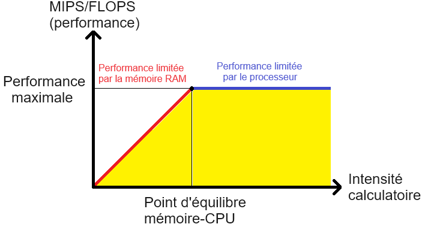

Serving Stack Overview
수업 개요
이 챕터는 서빙 스택을 제품 이름 목록으로 외우지 않고, 장애 티켓이 어느 계층으로 흘러가야 하는지 보여 주는 운영 지도처럼 정리한다. 2026년 기준으로 많은 팀은 위로는 OpenAI-compatible API를 요구하고, 아래로는 PagedAttention, KV cache reuse, disaggregated serving 같은 backend-specific 최적화를 검토한다. 따라서 핵심 질문은 "무엇이 더 고성능인가" 하나가 아니라 "어느 계층까지 공통화하고, 어느 계층부터 직접 책임질 것인가"다. [S1] [S2] [S3] [S4]
학습 목표
- API layer, runtime, backend optimization, observability를 서로 다른 책임 계층으로 설명할 수 있다.
- 같은
/v1/chat/completions엔드포인트라도 내부 스택 선택에 따라 운영 복잡도가 달라지는 이유를 말할 수 있다. - TTFT 저하를 만났을 때 API, queue, prefill, backend 순서로 좁혀 가는 진단 흐름을 설명할 수 있다.
- vLLM 계열의 범용 runtime 선택과 TensorRT-LLM 계열의 backend-specific 선택이 각각 어떤 조직에 맞는지 비교할 수 있다.
수업 전에 생각할 질문
- 클라이언트 SDK는 같은데 어떤 서비스는 첫 토큰이 빠르고 어떤 서비스는 느린 이유가 정말 모델 하나 때문일까?
- 반복되는 시스템 프롬프트가 많은 서비스라면 API 호환성보다 더 먼저 챙겨야 할 계층은 무엇일까?
- GPU 사용률이 높게 나오는데 사용자는 계속 느리다고 말한다면, 어떤 숫자부터 확인해야 오진을 줄일 수 있을까?
강의 스크립트
장면 1. 스택은 기능표가 아니라 책임 분할표다
교수자: 서빙 스택을 고를 때 가장 흔한 실수는 엔드포인트 이름만 보고 같은 제품군이라고 생각하는 겁니다. /v1/chat/completions를 열 수 있다는 사실은 입구 규약만 맞췄다는 뜻이지, 내부 운영 방식까지 같다는 뜻은 아닙니다. [S2]
학습자: 그러면 오늘은 계층을 어디까지 나눠서 봐야 하나요?
교수자: 네 층으로 시작합시다.
- API layer: 인증, 요청 스키마, 모델 라우팅, OpenAI-compatible contract를 맡는다. [S2]
- runtime layer: batching, scheduler, KV cache 관리, 메모리 효율 같은 공통 운영을 맡는다. [S1] [S2]
- backend optimization layer: 장치 친화적인 cache reuse나 prefill/decode 분리 같은 더 깊은 최적화를 맡는다. [S3] [S4]
- observability layer: 위 세 층의 상태를 숫자로 연결해 어디서 병목이 생겼는지 보여 준다. [S2] [S3] [S4]
학습자: observability를 따로 떼는 이유가 있나요?
교수자: 있습니다. 앞의 세 층은 "무엇을 실행하나"를 정하고, observability는 "왜 느린가"를 분해합니다. 이 챕터는 구조도보다 진단 순서를 더 중요하게 봅니다.
flowchart LR
U["Client / SDK"] --> A["API layer<br/>auth, schema, routing"]
A --> R["Runtime layer<br/>batching, scheduler, KV cache"]
R --> B["Backend optimization layer<br/>cache reuse, disaggregation"]
B --> D["Device<br/>GPU / NPU"]
A --> O["Observability"]
R --> O
B --> O
장면 2. 같은 API도 다른 운영 계약을 만든다
학습자: 그러면 OpenAI-compatible API를 제공하는 순간 선택은 거의 끝난 것 아닌가요?
교수자: 아닙니다. 거기서부터 두 갈래가 갈립니다. 하나는 표준 API 위에 범용 runtime을 얹어 공통 운영을 최대화하는 길이고, 다른 하나는 backend-specific 기능을 더 드러내 장치 맞춤 최적화를 깊게 가져가는 길입니다. [S2] [S3] [S4]
교수자: vLLM 논문과 문서는 PagedAttention과 serving runtime을 같은 이야기 안에 둡니다. 메모리 관리와 스케줄링을 공통 엔진에서 해결해 더 안정적으로 많은 요청을 처리하려는 관점입니다. [S1] [S2]
교수자: 반면 TensorRT-LLM 문서는 KV Cache Reuse, Disaggregated Serving을 별도 기능으로 내세웁니다. 이쪽은 "공통 엔진 하나로 충분한가"보다 "반복 prefix, 긴 prefill, 큰 클러스터에서 더 세밀하게 제어해야 하는가"에 더 가깝습니다. [S3] [S4]
학습자: 결국 API는 같아도 운영 계약은 달라지는군요.
교수자: 맞습니다. 제품 팀은 SDK 호환을 계약으로 보고, 플랫폼 팀은 runtime 안정성을 계약으로 보고, 성능 엔지니어링 팀은 backend 제어권을 계약으로 봅니다.
장면 3. 첫 토큰이 늦을 때는 계층별로 시간을 쪼개 본다
교수자: 이제 진단 순서를 고정해 봅시다. 첫 토큰이 늦다는 현상은 하나의 숫자처럼 보여도 실제로는 여러 계층이 합쳐진 결과입니다.
수식 1. First Token Latency 분해
교수자: 이 식은 논문 공식을 외우라는 뜻이 아니라, 티켓을 어디로 보내야 하는지 정하는 점검표입니다.
T_api: 인증, 요청 정규화, 라우팅에서 생긴 시간T_queue: batching 대기와 admission control로 묶인 시간T_prefill: 입력을 읽고 KV cache를 채우는 시간T_dispatch: runtime에서 backend 실행으로 넘어가는 시간
학습자: 그럼 첫 토큰이 느릴 때 바로 kernel profiler를 켜는 건 순서가 뒤집힌 거네요.
교수자: 정확합니다. 저는 보통 네 단계로 좁힙니다.
- API 에러율과 라우팅 이상이 있는지 본다.
- queue depth가 올라갔는지 확인한다.
- 긴 입력 때문에 prefill이 길어졌는지 본다.
- 그다음에도 설명이 안 되면 backend 시간과 메모리 압박을 본다.
교수자: 이 흐름이 잡혀 있으면 "GPU는 바쁜데 사용자는 왜 느리다고 하지?" 같은 질문이 훨씬 빨리 정리됩니다. [S2] [S3] [S4]
장면 4. 범용 runtime은 공통 병목을 흡수하려고 만든다
학습자: 범용 runtime이 잘하는 일은 정확히 무엇인가요?
교수자: 공통 병목을 한 곳에 모아 다루는 일입니다. vLLM의 PagedAttention은 KV cache 메모리 관리를 더 효율적으로 하려는 접근으로 소개되고, vLLM 문서는 이를 serving 기능과 함께 설명합니다. 즉 범용 runtime은 "다양한 요청이 섞여도 공통 스케줄러와 공통 메모리 정책으로 운영할 수 있는가"를 중심에 둡니다. [S1] [S2]
학습자: 어떤 팀이 이 선택에 잘 맞나요?
교수자: 예를 들어 사내 챗봇처럼 짧은 질의응답과 다중 모델 라우팅이 섞인 경우를 생각해 봅시다. 이런 서비스는 매 요청마다 backend를 바꿔 가며 미세 조정하기보다, 표준 API와 공통 runtime으로 운영 단순성을 확보하는 편이 낫습니다. 문제도 주로 queue 정책, 메모리 여유, 라우팅 품질에서 드러납니다. [S1] [S2]
장면 5. backend-specific 최적화는 기능 추가가 아니라 책임 추가다
학습자: 그럼 backend-specific 기능은 언제 내려가야 하나요?
교수자: 반복 prefix와 긴 입력이 성능 문제의 중심일 때입니다. TensorRT-LLM 문서가 KV Cache Reuse와 Disaggregated Serving을 따로 설명하는 이유도 여기에 있습니다. [S3] [S4]
KV Cache Reuse: 같은 prefix를 다시 계산하지 않도록 해 prefill 부담을 줄이려는 선택이다. [S3]Disaggregated Serving: prefill과 decode를 서로 다른 자원이나 역할로 분리해 간섭을 줄이려는 선택이다. [S4]
교수자: 예를 들어 계약서 검토 서비스처럼 긴 공통 시스템 프롬프트와 긴 첨부 문서가 반복된다면, "API는 이미 맞다"에서 멈추면 안 됩니다. cache hit ratio를 보지 못하면 reuse의 이점도 확인할 수 없고, prefill과 decode를 구분해 보지 못하면 분리 구조가 필요한지조차 판단하기 어렵습니다. [S3] [S4]
flowchart TD
A["TTFT 급등"] --> B{"API 이상?"}
B -- 예 --> C["auth / routing / schema 확인"]
B -- 아니오 --> D{"queue depth 증가?"}
D -- 예 --> E["runtime batching / admission 조정"]
D -- 아니오 --> F{"반복 prefix 많은가?"}
F -- 예 --> G["cache hit ratio 확인<br/>KV cache reuse 검토"]
F -- 아니오 --> H{"prefill이 decode를 밀어내는가?"}
H -- 예 --> I["disaggregated serving 검토"]
H -- 아니오 --> J["backend / kernel / memory pressure 확인"]
장면 6. kernel 최적화는 위 계층이 정리된 뒤에 의미가 커진다
교수자: 이제 roofline 관점을 가져와 봅시다. backend-specific 최적화가 항상 가장 큰 체감 개선을 주는 것은 아닙니다.
수식 2. Roofline 관점의 상한
교수자: 달성 가능한 성능은 연산 상한과 메모리 대역폭 상한 중 더 낮은 쪽에 묶입니다. 만약 이미 memory-bound라면 kernel만 더 다듬어도 사용자 체감은 제한적일 수 있습니다. 이때는 오히려 queue 조정, cache reuse, prefill/decode 분리처럼 더 위 계층의 선택이 더 큰 변화를 만듭니다. [S1] [S3] [S4]
학습자: 그러면 kernel 최적화는 늦게 봐도 되나요?
교수자: 늦게 본다기보다, 원인 후보를 먼저 정리한 다음 봐야 합니다. observability 없이 backend-specific 기능만 늘리면, 복잡도는 올라가는데 설명 가능한 성능 향상은 남지 않는 경우가 많습니다.
자주 헷갈리는 포인트
- OpenAI-compatible API를 쓴다고 runtime과 backend 특성까지 표준화되는 것은 아니다.
- PagedAttention, KV cache reuse, disaggregated serving은 모두 "성능 기능"처럼 보이지만 겨냥하는 병목이 서로 다르다. [S1] [S3] [S4]
- queue 문제를 backend 문제로 착각하면 GPU 사용률이 높다는 숫자만 붙잡고 오래 헤매게 된다.
- backend-specific 기능은 토글 하나가 아니라 추가 책임이다. hit ratio, 분리 상태, fallback 신호를 읽지 못하면 운영 부담만 커진다. [S3] [S4]
- observability는 대시보드 장식이 아니라 API, runtime, backend를 순서대로 배제하는 플레이북이다.
사례로 다시 보기
사례 1. 사내 업무 챗봇
짧은 질의응답, 빠른 SDK 연동, 여러 모델 실험이 중요한 팀이라면 API layer와 범용 runtime의 결합이 먼저다. 여기서는 OpenAI-compatible endpoint와 공통 batching, 공통 KV cache 관리가 운영 효율을 좌우한다. PagedAttention 같은 runtime 설계가 메모리 낭비를 줄여 다중 요청을 안정적으로 받치는 방향과 잘 맞는다. [S1] [S2]
사례 2. 계약서 검토와 긴 문서 요약
공통 시스템 프롬프트가 길고, 반복 prefix가 많고, 긴 입력이 몰리는 서비스라면 질문이 달라진다. 같은 prefix를 반복 계산하고 있는지, prefill이 decode를 계속 밀어내는지 먼저 봐야 한다. 이런 서비스는 KV cache reuse와 disaggregated serving이 실질 후보가 되는 전형적인 형태다. [S3] [S4]
사례 3. 운영 팀의 흔한 오진
사용자가 "첫 토큰이 늦다"고 말하자 곧바로 backend profiler부터 켠 팀이 있다고 해 보자. 그런데 실제 원인은 특정 테넌트의 요청 폭주로 queue depth가 올라간 것이고, 긴 입력이 prefill 시간을 늘려 TTFT를 더 악화시키고 있었다. 이 경우 문제는 kernel 미세 조정이 아니라 runtime 관측 부재다. [S2] [S3]
핵심 정리
- 서빙 스택의 핵심 차이는 엔드포인트 이름이 아니라 책임을 어디까지 공통화할지에 있다.
- vLLM 계열은 PagedAttention과 범용 runtime을 묶어 공통 운영을 강화하는 쪽에 가깝고, TensorRT-LLM 계열은 KV cache reuse와 disaggregated serving처럼 backend-specific 제어를 더 깊게 드러낸다. [S1] [S2] [S3] [S4]
- TTFT를 볼 때는 API, queue, prefill, backend 순서로 시간을 쪼개야 오진이 줄어든다.
- observability가 준비되지 않은 상태에서 더 깊은 최적화로 내려가면 성능보다 운영 복잡도가 먼저 커질 수 있다.
복습 체크리스트
- API layer, runtime layer, backend optimization layer, observability layer를 한 문장씩 구분해 설명할 수 있는가?
- 같은 OpenAI-compatible API여도 운영 계약이 달라지는 이유를 사례와 함께 설명할 수 있는가?
- TTFT가 악화되었을 때 queue depth, cache hit ratio, prefill 압박, backend 시간을 어떤 순서로 볼지 말할 수 있는가?
- PagedAttention과 KV cache reuse, disaggregated serving이 각각 다른 층의 선택이라는 점을 설명할 수 있는가?
- memory-bound 상황에서 kernel만 보는 접근이 왜 한계가 있는지 roofline 수식과 함께 설명할 수 있는가?
대안과 비교
| 선택 축 | OpenAI-compatible API 중심 | 범용 runtime 중심 | backend-specific 최적화 중심 | | --- | --- | --- | --- | | 주된 관심사 | SDK 호환과 빠른 연동 | 공통 스케줄링과 메모리 운영 | 반복 prefix, 긴 prefill, 장치 맞춤 제어 | | 대표적인 참조 문맥 | vLLM serving 문서 [S2] | PagedAttention 논문과 vLLM 문서 [S1] [S2] | TensorRT-LLM의 KV cache reuse, disaggregated serving [S3] [S4] | | 잘 맞는 팀 | 제품 애플리케이션 팀 | 플랫폼 팀 | 성능 엔지니어링 팀, 인프라 팀 | | 장점 | 도입이 빠르고 클라이언트 변경이 적다 | 운영 규칙을 공통화하기 쉽다 | 특정 병목을 더 깊게 줄일 수 있다 |
| 주의점 | 내부 병목이 가려질 수 있다 | observability 없이 운영하면 queue와 cache 문제를 놓치기 쉽다 | 기능을 켠 뒤 상태를 못 읽으면 복잡도만 늘어난다 |
|---|
참고 이미지
- [I1] 캡션: vLLM logo
- 출처 번호: [I1]
- 활용 이유: 범용 runtime과 OpenAI-compatible serving을 함께 설명할 때 대표 사례의 시각적 식별점으로 사용한다.

- [I2] 캡션: Roofline model
- 출처 번호: [I2]
- 활용 이유: backend 미세 최적화의 효과가 메모리 대역폭 상한에 묶일 수 있다는 설명을 보조한다.
출처
| 번호 | 제목 | 발행 주체 | 날짜 | URL | 사용 이유 | | --- | --- | --- | --- | --- | --- | | [S1] | Efficient Memory Management for Large Language Model Serving with PagedAttention | vLLM authors / arXiv | 2023-09-11 | https://arxiv.org/abs/2309.06180 | PagedAttention과 범용 runtime의 메모리 관리 관점을 연결하기 위해 사용 | | [S2] | vLLM Documentation | vLLM project | 2026-01-07 | https://docs.vllm.ai/en/latest/ | OpenAI-compatible serving과 runtime 운영 문맥을 설명하기 위해 사용 | | [S3] | KV Cache Reuse | NVIDIA TensorRT-LLM | 2026-03-08 (accessed) | https://nvidia.github.io/TensorRT-LLM/advanced/kv-cache-reuse.html | 반복 prefix 재사용이 어떤 병목을 겨냥하는지 설명하기 위해 사용 | | [S4] | Disaggregated Serving | NVIDIA TensorRT-LLM | 2026-03-08 (accessed) | https://nvidia.github.io/TensorRT-LLM/1.2.0rc6/features/disagg-serving.html | prefill/decode 분리와 계층별 선택 기준을 설명하기 위해 사용 |